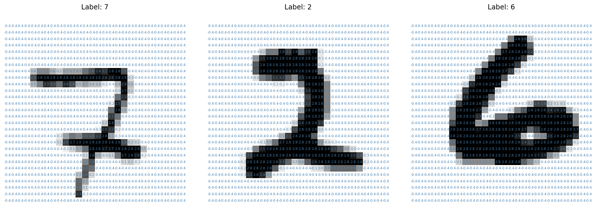
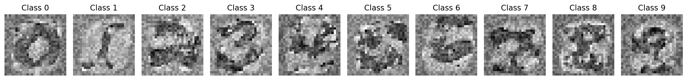
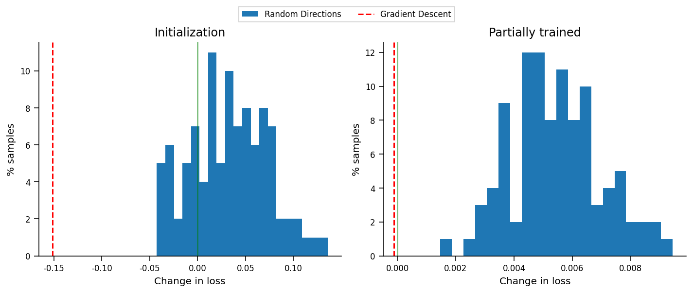
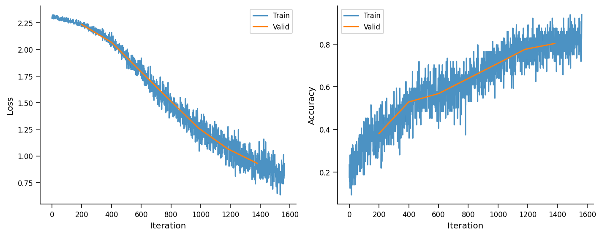

Tutorial 1: Optimization techniques
Contents


Tutorial 1: Optimization techniques¶
Week 1, Day 5: Optimization
By Neuromatch Academy
Content creators: Jose Gallego-Posada, Ioannis Mitliagkas
Content reviewers: Piyush Chauhan, Vladimir Haltakov, Siwei Bai, Kelson Shilling-Scrivo
Content editors: Charles J Edelson, Gagana B, Spiros Chavlis
Production editors: Arush Tagade, R. Krishnakumaran, Gagana B, Spiros Chavlis

Tutorial Objectives¶
Objectives:
Necessity and importance of optimization
Introduction to commonly used optimization techniques
Optimization in non-convex loss landscapes
‘Adaptive’ hyperparameter tuning
Ethical concerns
Setup¶
Install dependencies¶
# @title Install dependencies
!pip install git+https://github.com/NeuromatchAcademy/evaltools --quiet
from evaltools.airtable import AirtableForm
# generate airtable form
atform = AirtableForm('appn7VdPRseSoMXEG', 'W1D5_T1','https://portal.neuromatchacademy.org/api/redirect/to/2c5bbb85-d91a-4f5a-99fa-cefc287653d7')
# Imports
import copy
import ipywidgets as widgets
import matplotlib.pyplot as plt
import numpy as np
import time
import torch
import torchvision
import torchvision.datasets as datasets
import torch.nn.functional as F
import torch.nn as nn
import torch.optim as optim
from tqdm.auto import tqdm
Figure settings¶
# @title Figure settings
import ipywidgets as widgets # interactive display
%config InlineBackend.figure_format = 'retina'
plt.style.use("https://raw.githubusercontent.com/NeuromatchAcademy/content-creation/main/nma.mplstyle")
plt.rc('axes', unicode_minus=False)
Helper functions¶
# @title Helper functions
def print_params(model):
"""
Lists the name and current value of the model's
named parameters
Args:
model: an nn.Module inherited model
Represents the ML/DL model
Returns:
Nothing
"""
for name, param in model.named_parameters():
if param.requires_grad:
print(name, param.data)
Set random seed¶
Executing set_seed(seed=seed) you are setting the seed
# @title Set random seed
# @markdown Executing `set_seed(seed=seed)` you are setting the seed
# for DL its critical to set the random seed so that students can have a
# baseline to compare their results to expected results.
# Read more here: https://pytorch.org/docs/stable/notes/randomness.html
# Call the `set_seed` function in the exercises to ensure reproducibility.
import random
import torch
def set_seed(seed=None, seed_torch=True):
"""
Handles variability by controlling sources of randomness
through set seed values
Args:
seed: Integer
Set the seed value to given integer.
If no seed, set seed value to random integer in the range 2^32
seed_torch: Bool
Seeds the random number generator for all devices to
offer some guarantees on reproducibility
Returns:
Nothing
"""
if seed is None:
seed = np.random.choice(2 ** 32)
random.seed(seed)
np.random.seed(seed)
if seed_torch:
torch.manual_seed(seed)
torch.cuda.manual_seed_all(seed)
torch.cuda.manual_seed(seed)
torch.backends.cudnn.benchmark = False
torch.backends.cudnn.deterministic = True
print(f'Random seed {seed} has been set.')
# In case that `DataLoader` is used
def seed_worker(worker_id):
"""
DataLoader will reseed workers following randomness in
multi-process data loading algorithm.
Args:
worker_id: integer
ID of subprocess to seed. 0 means that
the data will be loaded in the main process
Refer: https://pytorch.org/docs/stable/data.html#data-loading-randomness for more details
Returns:
Nothing
"""
worker_seed = torch.initial_seed() % 2**32
np.random.seed(worker_seed)
random.seed(worker_seed)
Set device (GPU or CPU). Execute set_device()¶
# @title Set device (GPU or CPU). Execute `set_device()`
# especially if torch modules are used.
# inform the user if the notebook uses GPU or CPU.
def set_device():
"""
Set the device. CUDA if available, CPU otherwise
Args:
None
Returns:
Nothing
"""
device = "cuda" if torch.cuda.is_available() else "cpu"
if device != "cuda":
print("WARNING: For this notebook to perform best, "
"if possible, in the menu under `Runtime` -> "
"`Change runtime type.` select `GPU` ")
else:
print("GPU is enabled in this notebook.")
return device
SEED = 2021
set_seed(seed=SEED)
DEVICE = set_device()
Random seed 2021 has been set.
WARNING: For this notebook to perform best, if possible, in the menu under `Runtime` -> `Change runtime type.` select `GPU`
Section 1. Introduction¶
Time estimate: ~15 mins
Video 1: Introduction¶
Discuss: Unexpected consequences¶
Can you think of examples from your own experience/life where poorly chosen incentives or objectives have led to unexpected consequences?
# to_remove explanation
"""
Example 1: The 20th-century paleontologist G. H. R. von Koenigswald used to pay
Javanese (South Asian) locals for each fragment of hominin skull that they produced.
He later discovered that the people had been breaking up whole skulls into smaller
pieces to maximise their payments.
Wikipedia: https://en.wikipedia.org/wiki/Perverse_incentive (more examples here)
Example 2: This satirical article on the Huffington Post, mirroring the true
events of the Pi Bill, paints a dystopian picture of the consequences
of misaligned incentives and politics: "With the aim of improving the US performance
in OECD rankings, a congressperson introduced 'The Geometric Simplification Act' in
2011, declaring the Euclidean mathematical constant $\pi$ to be precisely 3".
Link: https://www.huffpost.com/entry/republicans-introduce-leg_b_837828
""";
Section 2: Case study: successfully training an MLP for image classification¶
Time estimate: ~40 mins
Many of the core ideas (and tricks) in modern optimization for deep learning can be illustrated in the simple setting of training an MLP to solve an image classification task. In this tutorial we will guide you through the key challenges that arise when optimizing high-dimensional, non-convex\(^\dagger\) problems. We will use these challenges to motivate and explain some commonly used solutions.
Disclaimer: Some of the functions you will code in this tutorial are already implemented in Pytorch and many other libraries. For pedagogical reasons, we decided to bring these simple coding tasks into the spotlight and place a relatively higher emphasis in your understanding of the algorithms, rather than the use of a specific library.
In ‘day-to-day’ research projects you will likely rely on the community-vetted, optimized libraries rather than the ‘manual implementations’ you will write today. In Section 8 you will have a chance to ‘put it all together’ and use the full power of Pytorch to tune the parameters of an MLP to classify handwritten digits.
\(^\dagger\): A strictly convex function has the same global and local minimum - a nice property for optimization as it won’t get stuck in a local minimum that isn’t a global one (e.g., \(f(x)=x^2 + 2x + 1\)). A non-convex function is wavy - has some ‘valleys’ (local minima) that aren’t as deep as the overall deepest ‘valley’ (global minimum). Thus, the optimization algorithms can get stuck in the local minimum, and it can be hard to tell when this happens (e.g., \(f(x) = x^4 + x^3 - 2x^2 - 2x\)). See also Section 5 for more details.
Video 2: Case Study - MLP Classification¶
Section 2.1: Data¶
We will use the MNIST dataset of handwritten digits. We load the data via the Pytorch datasets module, as you learned in W1D1.
Note: Although we can download the MNIST dataset directly from datasets using the optional argument download=True, we are going to download them from NMA directory on OSF to ensure network reliability.
Download MNIST dataset¶
# @title Download MNIST dataset
import tarfile, requests, os
fname = 'MNIST.tar.gz'
name = 'MNIST'
url = 'https://osf.io/y2fj6/download'
if not os.path.exists(name):
print('\nDownloading MNIST dataset...')
r = requests.get(url, allow_redirects=True)
with open(fname, 'wb') as fh:
fh.write(r.content)
print('\nDownloading MNIST completed.')
if not os.path.exists(name):
with tarfile.open(fname) as tar:
tar.extractall()
os.remove(fname)
else:
print('MNIST dataset has been downloaded.')
Downloading MNIST dataset...
Downloading MNIST completed.
def load_mnist_data(change_tensors=False, download=False):
"""
Load training and test examples for the MNIST handwritten digits dataset
with every image: 28*28 x 1 channel (greyscale image)
Args:
change_tensors: Bool
Argument to check if tensors need to be normalised
download: Bool
Argument to check if dataset needs to be downloaded/already exists
Returns:
train_set:
train_data: Tensor
training input tensor of size (train_size x 784)
train_target: Tensor
training 0-9 integer label tensor of size (train_size)
test_set:
test_data: Tensor
test input tensor of size (test_size x 784)
test_target: Tensor
training 0-9 integer label tensor of size (test_size)
"""
# Load train and test sets
train_set = datasets.MNIST(root='.', train=True, download=download,
transform=torchvision.transforms.ToTensor())
test_set = datasets.MNIST(root='.', train=False, download=download,
transform=torchvision.transforms.ToTensor())
# Original data is in range [0, 255]. We normalize the data wrt its mean and std_dev.
# Note that we only used *training set* information to compute mean and std
mean = train_set.data.float().mean()
std = train_set.data.float().std()
if change_tensors:
# Apply normalization directly to the tensors containing the dataset
train_set.data = (train_set.data.float() - mean) / std
test_set.data = (test_set.data.float() - mean) / std
else:
tform = torchvision.transforms.Compose([torchvision.transforms.ToTensor(),
torchvision.transforms.Normalize(mean=[mean / 255.], std=[std / 255.])
])
train_set = datasets.MNIST(root='.', train=True, download=download,
transform=tform)
test_set = datasets.MNIST(root='.', train=False, download=download,
transform=tform)
return train_set, test_set
train_set, test_set = load_mnist_data(change_tensors=True)
As we are just getting started, we will concentrate on a small subset of only 500 examples out of the 60.000 data points contained in the whole training set.
# Sample a random subset of 500 indices
subset_index = np.random.choice(len(train_set.data), 500)
# We will use these symbols to represent the training data and labels, to stay
# as close to the mathematical expressions as possible.
X, y = train_set.data[subset_index, :], train_set.targets[subset_index]
Run the following cell to visualize the content of three examples in our training set. Note how the preprocessing we applied to the data changes the range of pixel values after normalization.
Run me!¶
# @title Run me!
# Exploratory data analysis and visualisation
num_figures = 3
fig, axs = plt.subplots(1, num_figures, figsize=(5 * num_figures, 5))
for sample_id, ax in enumerate(axs):
# Plot the pixel values for each image
ax.matshow(X[sample_id, :], cmap='gray_r')
# 'Write' the pixel value in the corresponding location
for (i, j), z in np.ndenumerate(X[sample_id, :]):
text = '{:.1f}'.format(z)
ax.text(j, i, text, ha='center',
va='center', fontsize=6, c='steelblue')
ax.set_title('Label: ' + str(y[sample_id].item()))
ax.axis('off')
plt.show()

Section 2.2: Model¶
As you will see next week, there are specific model architectures that are better suited to image-like data, such as Convolutional Neural Networks (CNNs). For simplicity, in this tutorial we will focus exclusively on Multi-Layer Perceptron (MLP) models as they allow us to highlight many important optimization challenges shared with more advanced neural network designs.
class MLP(nn.Module):
"""
This class implements MLPs in Pytorch of an arbitrary number of hidden
layers of potentially different sizes. Since we concentrate on classification
tasks in this tutorial, we have a log_softmax layer at prediction time.
"""
def __init__(self, in_dim=784, out_dim=10, hidden_dims=[], use_bias=True):
"""
Constructs a MultiLayerPerceptron
Args:
in_dim: Integer
dimensionality of input data (784)
out_dim: Integer
number of classes (10)
hidden_dims: List
containing the dimensions of the hidden layers,
empty list corresponds to a linear model (in_dim, out_dim)
Returns:
Nothing
"""
super(MLP, self).__init__()
self.in_dim = in_dim
self.out_dim = out_dim
# If we have no hidden layer, just initialize a linear model (e.g. in logistic regression)
if len(hidden_dims) == 0:
layers = [nn.Linear(in_dim, out_dim, bias=use_bias)]
else:
# 'Actual' MLP with dimensions in_dim - num_hidden_layers*[hidden_dim] - out_dim
layers = [nn.Linear(in_dim, hidden_dims[0], bias=use_bias), nn.ReLU()]
# Loop until before the last layer
for i, hidden_dim in enumerate(hidden_dims[:-1]):
layers += [nn.Linear(hidden_dim, hidden_dims[i + 1], bias=use_bias),
nn.ReLU()]
# Add final layer to the number of classes
layers += [nn.Linear(hidden_dims[-1], out_dim, bias=use_bias)]
self.main = nn.Sequential(*layers)
def forward(self, x):
"""
Defines the network structure and flow from input to output
Args:
x: Tensor
Image to be processed by the network
Returns:
output: Tensor
same dimension and shape as the input with probabilistic values in the range [0, 1]
"""
# Flatten each images into a 'vector'
transformed_x = x.view(-1, self.in_dim)
hidden_output = self.main(transformed_x)
output = F.log_softmax(hidden_output, dim=1)
return output
Linear models constitute a very special kind of MLPs: they are equivalent to an MLP with zero hidden layers. This is simply an affine transformation, in other words a ‘linear’ map \(W x\) with an ‘offset’ \(b\); followed by a softmax function.
Here \(x \in \mathbb{R}^{784}\), \(W \in \mathbb{R}^{10 \times 784}\) and \(b \in \mathbb{R}^{10}\). Notice that the dimensions of the weight matrix are \(10 \times 784\) as the input tensors are flattened images, i.e., \(28 \times 28 = 784\)-dimensional tensors and the output layer consists of \(10\) nodes. Also, note that the implementation of softmax encapsulates b in W i.e., It maps the rows of the input instead of the columns. That is, the i’th row of the output is the mapping of the i’th row of the input under W, plus the bias term. Refer Affine maps here: https://pytorch.org/tutorials/beginner/nlp/deep_learning_tutorial.html#affine-maps
# Empty hidden_dims means we take a model with zero hidden layers.
model = MLP(in_dim=784, out_dim=10, hidden_dims=[])
# We print the model structure with 784 inputs and 10 outputs
print(model)
MLP(
(main): Sequential(
(0): Linear(in_features=784, out_features=10, bias=True)
)
)
Section 2.3: Loss¶
While we care about the accuracy of the model, the ‘discrete’ nature of the 0-1 loss makes it challenging to optimize. In order to learn good parameters for this model, we will use the cross entropy loss (negative log-likelihood), which you saw in the last lecture, as a surrogate objective to be minimized.
This particular choice of model and optimization objective leads to a convex optimization problem with respect to the parameters \(W\) and \(b\).
loss_fn = F.nll_loss
Section 2.4: Interpretability¶
In the last lecture, you saw that inspecting the weights of a model can provide insights on what ‘concepts’ the model has learned. Here we show the weights of a partially trained model. The weights corresponding to each class ‘learn’ to fire when an input of the class is detected.
#@markdown Run _this cell_ to train the model. If you are curious about how the training
#@markdown takes place, double-click this cell to find out. At the end of this tutorial
#@markdown you will have the opportunity to train a more complex model on your own.
cell_verbose = False
partial_trained_model = MLP(in_dim=784, out_dim=10, hidden_dims=[])
if cell_verbose:
print('Init loss', loss_fn(partial_trained_model(X), y).item()) # This matches around np.log(10 = # of classes)
# Invoke an optimizer using Adaptive gradient and Momentum (more about this in Section 7)
optimizer = optim.Adam(partial_trained_model.parameters(), lr=7e-4)
for _ in range(200):
loss = loss_fn(partial_trained_model(X), y)
optimizer.zero_grad()
loss.backward()
optimizer.step()
if cell_verbose:
print('End loss', loss_fn(partial_trained_model(X), y).item()) # This should be less than 1e-2
# Show class filters of a trained model
W = partial_trained_model.main[0].weight.data.numpy()
fig, axs = plt.subplots(1, 10, figsize=(15, 4))
for class_id in range(10):
axs[class_id].imshow(W[class_id, :].reshape(28, 28), cmap='gray_r')
axs[class_id].axis('off')
axs[class_id].set_title('Class ' + str(class_id) )
plt.show()

Section 3: High dimensional search¶
Time estimate: ~25 mins
We now have a model with its corresponding trainable parameters as well as an objective to optimize. Where do we goto next? How do we find a ‘good’ configuration of parameters?
One idea is to choose a random direction and move only if the objective is reduced. However, this is inefficient in high dimensions and you will see how gradient descent (with a suitable step-size) can guarantee consistent improvement in terms of the objective function.
Video 3: Optimization of an Objective Function¶
Coding Exercise 3: Implement gradient descent¶
In this exercise you will use PyTorch automatic differentiation capabilities to compute the gradient of the loss with respect to the parameters of the model. You will then use these gradients to implement the update performed by the gradient descent method.
def zero_grad(params):
"""
Clear gradients as they accumulate on successive backward calls
Args:
params: an iterator over tensors
i.e., updating the Weights and biases
Returns:
Nothing
"""
for par in params:
if not(par.grad is None):
par.grad.data.zero_()
def random_update(model, noise_scale=0.1, normalized=False):
"""
Performs a random update on the parameters of the model to help
understand the effectiveness of updating random directions
for the problem of optimizing the parameters of a high-dimensional linear model.
Args:
model: nn.Module derived class
The model whose parameters are to be updated
noise_scale: float
Specifies the magnitude of random weight
normalized: Bool
Indicates if the parameter has been normalised or not
Returns:
Nothing
"""
for par in model.parameters():
noise = torch.randn_like(par)
if normalized:
noise /= torch.norm(noise)
par.data += noise_scale * noise
def gradient_update(loss, params, lr=1e-3):
"""
Perform a gradient descent update on a given loss over a collection of parameters
Args:
loss: Tensor
A scalar tensor containing the loss through which the gradient will be computed
params: List of iterables
Collection of parameters with respect to which we compute gradients
lr: Float
Scalar specifying the learning rate or step-size for the update
Returns:
Nothing
"""
# Clear up gradients as Pytorch automatically accumulates gradients from
# successive backward calls
zero_grad(params)
# Compute gradients on given objective
loss.backward()
with torch.no_grad():
for par in params:
#################################################
## TODO for students: update the value of the parameter ##
raise NotImplementedError("Student exercise: implement gradient update")
#################################################
# Here we work with the 'data' attribute of the parameter rather than the
# parameter itself.
# Hence - use the learning rate and the parameter's .grad.data attribute to perform an update
par.data -= ...
# add event to airtable
atform.add_event('Coding Exercise 3: Implement gradient descent')
set_seed(seed=SEED)
model1 = MLP(in_dim=784, out_dim=10, hidden_dims=[])
print('\n The model1 parameters before the update are: \n')
print_params(model1)
loss = loss_fn(model1(X), y)
## Uncomment below to test your function
# gradient_update(loss, list(model1.parameters()), lr=1e-1)
# print('\n The model1 parameters after the update are: \n')
# print_params(model1)
The model1 parameters after the update are:
main.0.weight tensor([[-0.0263, 0.0010, 0.0174, ..., 0.0298, 0.0278, -0.0220],
[-0.0047, -0.0302, -0.0093, ..., -0.0077, 0.0248, -0.0240],
[ 0.0234, -0.0237, 0.0335, ..., 0.0117, 0.0263, -0.0187],
...,
[-0.0006, 0.0156, 0.0110, ..., 0.0143, -0.0302, -0.0145],
[ 0.0164, 0.0286, 0.0238, ..., -0.0127, -0.0191, 0.0188],
[ 0.0206, -0.0354, -0.0184, ..., -0.0272, 0.0098, 0.0002]])
main.0.bias tensor([-0.0292, -0.0018, 0.0115, -0.0370, 0.0054, 0.0155, 0.0317, 0.0246,
0.0198, -0.0061])
# to_remove solution
def gradient_update(loss, params, lr=1e-3):
"""
Perform a gradient descent update on a given loss over a collection of parameters
Args:
loss: Tensor
A scalar tensor containing the loss through which the gradient will be computed
params: List of iterables
Collection of parameters with respect to which we compute gradients
lr: Float
Scalar specifying the learning rate or step-size for the update
Returns:
Nothing
"""
# Clear up gradients as Pytorch automatically accumulates gradients from
# successive backward calls
zero_grad(params)
# Compute gradients on given objective
loss.backward()
with torch.no_grad():
for par in params:
#################################################
## TODO for students: update the value of the parameter ##
# raise NotImplementedError("Student exercise: implement gradient update")
#################################################
# Here we work with the 'data' attribute of the parameter rather than the
# parameter itself.
# Hence - use the learning rate and the parameter's .grad.data attribute to perform an update
par.data -= lr * par.grad.data
# add event to airtable
atform.add_event('Coding Exercise 3: Implement gradient descent')
set_seed(seed=SEED)
model1 = MLP(in_dim=784, out_dim=10, hidden_dims=[])
print('\n The model1 parameters before the update are: \n')
print_params(model1)
loss = loss_fn(model1(X), y)
## Uncomment below to test your function
gradient_update(loss, list(model1.parameters()), lr=1e-1)
print('\n The model1 parameters after the update are: \n')
print_params(model1)
Random seed 2021 has been set.
The model1 parameters before the update are:
main.0.weight tensor([[-0.0264, 0.0010, 0.0173, ..., 0.0297, 0.0278, -0.0221],
[-0.0040, -0.0295, -0.0086, ..., -0.0070, 0.0254, -0.0233],
[ 0.0240, -0.0231, 0.0342, ..., 0.0124, 0.0270, -0.0180],
...,
[-0.0005, 0.0157, 0.0111, ..., 0.0144, -0.0301, -0.0144],
[ 0.0181, 0.0303, 0.0255, ..., -0.0110, -0.0175, 0.0205],
[ 0.0208, -0.0353, -0.0183, ..., -0.0271, 0.0099, 0.0003]])
main.0.bias tensor([-0.0290, -0.0033, 0.0100, -0.0320, 0.0022, 0.0221, 0.0307, 0.0243,
0.0159, -0.0064])
The model1 parameters after the update are:
main.0.weight tensor([[-0.0263, 0.0010, 0.0174, ..., 0.0298, 0.0278, -0.0220],
[-0.0047, -0.0302, -0.0093, ..., -0.0077, 0.0248, -0.0240],
[ 0.0234, -0.0237, 0.0335, ..., 0.0117, 0.0263, -0.0187],
...,
[-0.0006, 0.0156, 0.0110, ..., 0.0143, -0.0302, -0.0145],
[ 0.0164, 0.0286, 0.0238, ..., -0.0127, -0.0191, 0.0188],
[ 0.0206, -0.0354, -0.0184, ..., -0.0272, 0.0098, 0.0002]])
main.0.bias tensor([-0.0292, -0.0018, 0.0115, -0.0370, 0.0054, 0.0155, 0.0317, 0.0246,
0.0198, -0.0061])
Comparing updates¶
These plots compare the effectiveness of updating random directions for the problem of optimizing the parameters of a high-dimensional linear model. We contrast the behavior at initialization and during an intermediate stage of training by showing the histograms of change in loss over 100 different random directions vs the change in loss induced by the gradient descent update
Remember: Since we are trying to minimize here, the more negative the better!
Run this cell to visualize the results
# @markdown _Run this cell_ to visualize the results
fig, axs = plt.subplots(1, 2, figsize=(10, 4))
for id, (model_name, my_model) in enumerate([('Initialization', model),
('Partially trained', partial_trained_model)]):
# Compute the loss we will be comparing to
base_loss = loss_fn(my_model(X), y)
# Compute the improvement via gradient descent
dummy_model = copy.deepcopy(my_model)
loss1 = loss_fn(dummy_model(X), y)
gradient_update(loss1, list(dummy_model.parameters()), lr=1e-2)
gd_delta = loss_fn(dummy_model(X), y) - base_loss
deltas = []
for trial_id in range(100):
# Compute the improvement obtained with a random direction
dummy_model = copy.deepcopy(my_model)
random_update(dummy_model, noise_scale=1e-2)
deltas.append((loss_fn(dummy_model(X), y) - base_loss).item())
# Plot histogram for random direction and vertical line for gradient descent
axs[id].hist(deltas, label='Random Directions', bins=20)
axs[id].set_title(model_name)
axs[id].set_xlabel('Change in loss')
axs[id].set_ylabel('% samples')
axs[id].axvline(0, c='green', alpha=0.5)
axs[id].axvline(gd_delta.item(), linestyle='--', c='red', alpha=1,
label='Gradient Descent')
handles, labels = axs[id].get_legend_handles_labels()
fig.legend(handles, labels, loc='upper center',
bbox_to_anchor=(0.5, 1.05),
fancybox=False, shadow=False, ncol=2)
plt.show()

Think! 3: Gradient descent vs. random search¶
Compare the behavior of gradient descent and random search based on the histograms above. Is any of the two methods more reliable? How can you explain the changes between behavior of the methods at initialization vs during training?
Student Response¶
# @title Student Response
from ipywidgets import widgets
text=widgets.Textarea(
value='Type your answer here and click on `Submit!`',
placeholder='Type something',
description='',
disabled=False
)
button = widgets.Button(description="Submit!")
display(text,button)
def on_button_clicked(b):
atform.add_answer('q1' , text.value)
print("Submission successful!")
button.on_click(on_button_clicked)
# to_remove explanation
"""
Note how gradient descent (with a properly tuned step size) guarantees an improvement
in the objective function, unlike the random update method, which very rarely finds a
direction that improves the objective function. The green line indicates
a change of zero in the value of the loss: we want to be below zero to minimize!
The magnitude of the improvement at initialization is much bigger than
the change in loss obtained at a later stage in training. This is expected,
as we have gotten closer to the optimum parameter configuration.
""";
Section 4: Poor conditioning¶
Time estimate: ~30 mins
Already in this ‘simple’ logistic regression problem, the issue of bad conditioning is haunting us. Not all parameters are created equal and the sensitivity of the network to changes on the parameters will have a big impact in the dynamics of the optimization.
Video 4: Momentum¶
We illustrate this issue in a 2-dimensional setting. We freeze all but two parameters of the network: one of them is an element of the weight matrix (filter) for class 0, while the other is the bias for class 7. This results in an optimization with two decision variables.
How much difference is there in the behavior of these two parameters under gradient descent? What is the effect of momentum in bridging that gap?
# to remove solution
"""
The landscapes of the two parameters appear to be
flatter under gradient descent as can be seen in interactive demo 4 below.
As randomly-initialised models exhibit chaos, we use the Newton's approach
by tweaking the learning rate i.e., taking smaller steps in the indicated
direction and recomputing gradients to find an optimal solution on a
varied surface. Momentum helps reduce the chaos by maintaining a consistent
direction for exploration (linear combination of the previous heading vector,
and the newly-computed gradient vector).
""";
Run this cell to setup some helper functions.
# @markdown _Run this cell_ to setup some helper functions.
def loss_2d(model, u, v, mask_idx=(0, 378), bias_id=7):
"""
Defines a 2-dim function by freezing all
but two parameters of a linear model.
Args:
model: nn.Module
a pytorch linear model
u: Scalar
first free parameter
u: Scalar
second free parameter
mask_idx: Tuple
selects parameter in weight matrix replaced by u
bias_idx: Integer
selects parameter in bias vector replaced by v
Returns:
loss: Scalar
loss of the 'new' model
over inputs X, y (defined externally)
"""
# We zero out the element of the weight tensor that will be
# replaced by u
mask = torch.ones_like(model.main[0].weight)
mask[mask_idx[0], mask_idx[1]] = 0.
masked_weights = model.main[0].weight * mask
# u is replacing an element of the weight matrix
masked_weights[mask_idx[0], mask_idx[1]] = u
res = X.reshape(-1, 784) @ masked_weights.T + model.main[0].bias
# v is replacing a bias for class 7
res[:, 7] += v - model.main[0].bias[7]
res = F.log_softmax(res, dim=1)
return loss_fn(res, y)
def plot_surface(U, V, Z, fig):
"""
Plot a 3D loss surface given
meshed inputs U, V and values Z
Args:
U: nd.array()
Input to plot for obtaining 3D loss surface
V: nd.array()
Input to plot for obtaining 3D loss surface
Z: nd.array()
Input to plot for obtaining 3D loss surface
fig: matplotlib.figure.Figure instance
Helps create a new figure, or activate an existing figure.
Returns:
ax: matplotlib.axes._subplots.AxesSubplot instance
Plotted subplot data
"""
ax = fig.add_subplot(1, 2, 2, projection='3d')
ax.view_init(45, -130)
surf = ax.plot_surface(U, V, Z, cmap=plt.cm.coolwarm,
linewidth=0, antialiased=True, alpha=0.5)
# Select certain level contours to plot
# levels = Z.min() * np.array([1.005, 1.1, 1.3, 1.5, 2.])
# plt.contour(U, V, Z)# levels=levels, alpha=0.5)
ax.set_xlabel('Weight')
ax.set_ylabel('Bias')
ax.set_zlabel('Loss', rotation=90)
return ax
def plot_param_distance(best_u, best_v, trajs, fig, styles, labels,
use_log=False, y_min_v=-12.0, y_max_v=1.5):
"""
Plot the distance to each of the
two parameters for a collection of 'trajectories'
Args:
best_u: float
Optimal distance of vector u within trajectory
best_v: float
Optimal distance of vector v within trajectory
trajs: Tensor
Specifies trajectories
fig: matplotlib.figure.Figure instance
Helps create a new figure, or activate an existing figure.
styles: Tensor
Specifying Style requirements
use_log: Bool
Specifies if log distance should be calculated; else, absolute distance
y_min_v: float
Minimum distance from y to v
y_max_v: float
Maximum distance from y to v
Returns:
ax: matplotlib.axes._subplots.AxesSubplot instance
Plotted subplot data
"""
ax = fig.add_subplot(1, 1, 1)
for traj, style, label in zip(trajs, styles, labels):
d0 = np.array([np.abs(_[0] - best_u) for _ in traj])
d1 = np.array([np.abs(_[1] - best_v) for _ in traj])
if use_log:
d0 = np.log(1e-16 + d0)
d1 = np.log(1e-16 + d1)
ax.plot(range(len(traj)), d0, style, label='weight - ' + label)
ax.plot(range(len(traj)), d1, style, label='bias - ' + label)
ax.set_xlabel('Iteration')
if use_log:
ax.set_ylabel('Log distance to optimum (per dimension)')
ax.set_ylim(y_min_v, y_max_v)
else:
ax.set_ylabel('Abs distance to optimum (per dimension)')
ax.legend(loc='right', bbox_to_anchor=(1.5, 0.5),
fancybox=False, shadow=False, ncol=1)
return ax
def run_optimizer(inits, eval_fn, update_fn, max_steps=500,
optim_kwargs={'lr':1e-2}, log_traj=True):
"""
Runs an optimizer on a given
objective and logs parameter trajectory
Args:
inits list: Scalar
initialization of parameters
eval_fn: Callable
function computing the objective to be minimized
update_fn: Callable
function executing parameter update
max_steps: Integer
number of iterations to run
optim_kwargs: Dictionary
customizable dictionary containing appropriate hyperparameters for the chosen optimizer
log_traj: Bool
Specifies if log distance should be calculated; else, absolute distance
Returns:
list: List
trajectory information [*params, loss] for each optimization step
"""
# Initialize parameters and optimizer
params = [nn.Parameter(torch.tensor(_)) for _ in inits]
# Methods like momentum and rmsprop keep and auxiliary vector of parameters
aux_tensors = [torch.zeros_like(_) for _ in params]
if log_traj:
traj = np.zeros((max_steps, len(params)+1))
for _ in range(max_steps):
# Evaluate loss
loss = eval_fn(*params)
# Store 'trajectory' information
if log_traj:
traj[_, :] = [_.item() for _ in params] + [loss.item()]
# Perform update
if update_fn == gradient_update:
gradient_update(loss, params, **optim_kwargs)
else:
update_fn(loss, params, aux_tensors, **optim_kwargs)
if log_traj:
return traj
L = 4.
xs = np.linspace(-L, L, 30)
ys = np.linspace(-L, L, 30)
U, V = np.meshgrid(xs, ys)
Coding Exercise 4: Implement momentum¶
In this exercise you will implement the momentum update given by:
It is convenient to re-express this update rule in terms of a recursion. For that, we define ‘velocity’ as the quantity:
which leads to the two-step update rule:
Pay attention to the positive sign of the update in the last equation, given the definition of \(v_t\), above.
def momentum_update(loss, params, grad_vel, lr=1e-3, beta=0.8):
"""
Perform a momentum update over a collection of parameters given a loss and velocities
Args:
loss: Tensor
A scalar tensor containing the loss through which gradient will be computed
params: Iterable
Collection of parameters with respect to which we compute gradients
grad_vel: Iterable
Collection containing the 'velocity' v_t for each parameter
lr: Float
Scalar specifying the learning rate or step-size for the update
beta: Float
Scalar 'momentum' parameter
Returns:
Nothing
"""
# Clear up gradients as Pytorch automatically accumulates gradients from
# successive backward calls
zero_grad(params)
# Compute gradients on given objective
loss.backward()
with torch.no_grad():
for (par, vel) in zip(params, grad_vel):
#################################################
## TODO for students: update the value of the parameter ##
raise NotImplementedError("Student exercise: implement momentum update")
#################################################
# Update 'velocity'
vel.data = ...
# Update parameters
par.data += ...
# add event to airtable
atform.add_event('Coding Exercise 4: Implement momentum')
set_seed(seed=SEED)
model2 = MLP(in_dim=784, out_dim=10, hidden_dims=[])
print('\n The model2 parameters before the update are: \n')
print_params(model2)
loss = loss_fn(model2(X), y)
initial_vel = [torch.randn_like(p) for p in model2.parameters()]
## Uncomment below to test your function
# momentum_update(loss, list(model2.parameters()), grad_vel=initial_vel, lr=1e-1, beta=0.9)
# print('\n The model2 parameters after the update are: \n')
# print_params(model2)
The model2 parameters after the update are:
main.0.weight tensor([[ 1.5898, 0.0116, -2.0239, ..., -1.0871, 0.4030, -0.9577],
[ 0.4653, 0.6022, -0.7363, ..., 0.5485, -0.2747, -0.6539],
[-1.4117, -1.1045, 0.6492, ..., -1.0201, 0.6503, 0.1310],
...,
[-0.5098, 0.5075, -0.0718, ..., 1.1192, 0.2900, -0.9657],
[-0.4405, -0.1174, 0.7542, ..., 0.0792, -0.1857, 0.3537],
[-1.0824, 1.0080, -0.4254, ..., -0.3760, -1.7491, 0.6025]])
main.0.bias tensor([ 0.4147, -1.0440, 0.8720, -1.6201, -0.9632, 0.9430, -0.5180, 1.3417,
0.6574, 0.3677])
# to_remove solution
def momentum_update(loss, params, grad_vel, lr=1e-3, beta=0.8):
"""
Perform a momentum update over a collection of parameters given a loss and velocities
Args:
loss: Tensor
A scalar tensor containing the loss through which gradient will be computed
params: Iterable
Collection of parameters with respect to which we compute gradients
grad_vel: Iterable
Collection containing the 'velocity' v_t for each parameter
lr: Float
Scalar specifying the learning rate or step-size for the update
beta: Float
Scalar 'momentum' parameter
Returns:
Nothing
"""
# Clear up gradients as Pytorch automatically accumulates gradients from
# successive backward calls
zero_grad(params)
# Compute gradients on given objective
loss.backward()
with torch.no_grad():
for (par, vel) in zip(params, grad_vel):
# Update 'velocity'
vel.data = -lr * par.grad.data + beta * vel.data
# Update parameters
par.data += vel.data
# add event to airtable
atform.add_event('Coding Exercise 4: Implement momentum')
set_seed(seed=SEED)
model2 = MLP(in_dim=784, out_dim=10, hidden_dims=[])
print('\n The model2 parameters before the update are: \n')
print_params(model2)
loss = loss_fn(model2(X), y)
initial_vel = [torch.randn_like(p) for p in model2.parameters()]
## Uncomment below to test your function
momentum_update(loss, list(model2.parameters()), grad_vel=initial_vel, lr=1e-1, beta=0.9)
print('\n The model2 parameters after the update are: \n')
print_params(model2)
Random seed 2021 has been set.
The model2 parameters before the update are:
main.0.weight tensor([[-0.0264, 0.0010, 0.0173, ..., 0.0297, 0.0278, -0.0221],
[-0.0040, -0.0295, -0.0086, ..., -0.0070, 0.0254, -0.0233],
[ 0.0240, -0.0231, 0.0342, ..., 0.0124, 0.0270, -0.0180],
...,
[-0.0005, 0.0157, 0.0111, ..., 0.0144, -0.0301, -0.0144],
[ 0.0181, 0.0303, 0.0255, ..., -0.0110, -0.0175, 0.0205],
[ 0.0208, -0.0353, -0.0183, ..., -0.0271, 0.0099, 0.0003]])
main.0.bias tensor([-0.0290, -0.0033, 0.0100, -0.0320, 0.0022, 0.0221, 0.0307, 0.0243,
0.0159, -0.0064])
The model2 parameters after the update are:
main.0.weight tensor([[ 1.5898, 0.0116, -2.0239, ..., -1.0871, 0.4030, -0.9577],
[ 0.4653, 0.6022, -0.7363, ..., 0.5485, -0.2747, -0.6539],
[-1.4117, -1.1045, 0.6492, ..., -1.0201, 0.6503, 0.1310],
...,
[-0.5098, 0.5075, -0.0718, ..., 1.1192, 0.2900, -0.9657],
[-0.4405, -0.1174, 0.7542, ..., 0.0792, -0.1857, 0.3537],
[-1.0824, 1.0080, -0.4254, ..., -0.3760, -1.7491, 0.6025]])
main.0.bias tensor([ 0.4147, -1.0440, 0.8720, -1.6201, -0.9632, 0.9430, -0.5180, 1.3417,
0.6574, 0.3677])
Interactive Demo 4: Momentum vs. GD¶
The plots below show the distance to the optimum for both variables across the two methods, as well as the parameter trajectory over the loss surface.
Tune the learning rate and momentum parameters to achieve a loss below \(10^{-6}\) (for both dimensions) within 100 iterations.
Run this cell to enable the widget!
# @markdown Run this cell to enable the widget!
from matplotlib.lines import Line2D
def run_newton(func, init_list=[0., 0.], max_iter=200):
"""
Find the optimum of this 2D problem using Newton's method
Args:
func: Callable
Initialising parameter tensor updates
init_list: Scalar
initialization of parameters
max_iter: Integer
The maximum number of iterations to complete
Returns:
par_tensor.data.numpy(): ndarray
List of newton's updates
"""
par_tensor = torch.tensor(init_list, requires_grad=True)
t_g = lambda par_tensor: func(par_tensor[0], par_tensor[1])
for _ in tqdm(range(max_iter)):
eval_loss = t_g(par_tensor)
eval_grad = torch.autograd.grad(eval_loss, [par_tensor])[0]
eval_hess = torch.autograd.functional.hessian(t_g, par_tensor)
# Newton's update is: - inverse(Hessian) x gradient
par_tensor.data -= torch.inverse(eval_hess) @ eval_grad
return par_tensor.data.numpy()
set_seed(2021)
model = MLP(in_dim=784, out_dim=10, hidden_dims=[])
# Define 2d loss objectives and surface values
g = lambda u, v: loss_2d(copy.deepcopy(model), u, v)
Z = np.fromiter(map(g, U.ravel(), V.ravel()), U.dtype).reshape(V.shape)
best_u, best_v = run_newton(func=g)
# Initialization of the variables
INITS = [2.5, 3.7]
# Used for plotting
LABELS = ['GD', 'Momentum']
COLORS = ['black', 'red']
LSTYLES = ['-', '--']
@widgets.interact_manual
def momentum_experiment(max_steps=widgets.IntSlider(300, 50, 500, 5),
lr=widgets.FloatLogSlider(value=1e-1, min=-3, max=0.7, step=0.1),
beta=widgets.FloatSlider(value=9e-1, min=0, max=1., step=0.01)
):
"""
Displays the momentum experiment as a widget
Args:
max_steps: widget integer slider
Maximum number of steps on the slider with default = 300
lr: widget float slider
Scalar specifying the learning rate or step-size for the update with default = 1e-1
beta: widget float slider
Scalar 'momentum' parameter with default = 9e-1
Returns:
Nothing
"""
# Execute both optimizers
sgd_traj = run_optimizer(INITS, eval_fn=g, update_fn=gradient_update,
max_steps=max_steps, optim_kwargs={'lr': lr})
mom_traj = run_optimizer(INITS, eval_fn=g, update_fn=momentum_update,
max_steps=max_steps, optim_kwargs={'lr': lr, 'beta':beta})
TRAJS = [sgd_traj, mom_traj]
# Plot distances
fig = plt.figure(figsize=(9,4))
plot_param_distance(best_u, best_v, TRAJS, fig,
LSTYLES, LABELS, use_log=True, y_min_v=-12.0, y_max_v=1.5)
# # Plot trajectories
fig = plt.figure(figsize=(12, 5))
ax = plot_surface(U, V, Z, fig)
for traj, c, label in zip(TRAJS, COLORS, LABELS):
ax.plot3D(*traj.T, c, linewidth=0.3, label=label)
ax.scatter3D(*traj.T, '.-', s=1, c=c)
# Plot optimum point
ax.scatter(best_u, best_v, Z.min(), marker='*', s=80, c='lime', label='Opt.');
lines = [Line2D([0], [0],
color=c,
linewidth=3,
linestyle='--') for c in COLORS]
lines.append(Line2D([0], [0], color='lime', linewidth=0, marker='*'))
ax.legend(lines, LABELS + ['Optimum'], loc='right',
bbox_to_anchor=(.8, -0.1), ncol=len(LABELS) + 1)
Random seed 2021 has been set.
Think! 4: Momentum and oscillations¶
Discuss how this specific example illustrates the issue of poor conditioning in optimization? How does momentum help resolve these difficulties?
Do you see oscillations for any of these methods? Why does this happen?
Student Response¶
# @title Student Response
from ipywidgets import widgets
text=widgets.Textarea(
value='Type your answer here and click on `Submit!`',
placeholder='Type something',
description='',
disabled=False
)
button = widgets.Button(description="Submit!")
display(text,button)
def on_button_clicked(b):
atform.add_answer('q2' , text.value)
print("Submission successful!")
button.on_click(on_button_clicked)
# to_remove explanation
"""
- The loss has very different curvatures between the weight and the bias dimensions:
a change of the same magnitude has a much bigger effect in the loss when applied to the weight than to the bias.
This leads to very slow convergence of GD in the bias dimension.
- Momentum encourages 'movement' in previously seen directions and results in
both parameters converging much faster. The oscillations you can see for the momentum
trajectories arise due to overshooting past the solution due to the momentum term.
""";
Section 5: Non-convexity¶
Time estimate: ~30 mins
The introduction of even just 1 hidden layer in the neural network transforms the previous convex optimization problem into a non-convex one. And with great non-convexity, comes great responsibility… (Sorry, we couldn’t help it!)
Note: From this section onwards we will be dealing with non-convex optimization problems for the remainder of the tutorial.
Video 5: Overparameterization¶
Take a couple of minutes to play with a more complex 3D visualization of the loss landscape of a neural network on a non-convex problem. Visit https://losslandscape.com/explorer.
Explore the features on the bottom left corner. You can see an explanation for each icon by clicking on the ( i ) button located on the top right corner.
Use the ‘gradient descent’ feature to perform a thought experiment:
Choose an initialization
Choose the learning rate
Mentally formulate your hypothesis about what kind of trajectory you expect to observe
Run the experiment and contrast your intuition with the observed behavior.
Repeat this experiment a handful of times for several initialization/learning rate configurations
Interactive Demo 5: Overparameterization to the rescue!¶
As you may have seen, the non-convex nature of the surface can lead the optimization process to get stuck in undesirable local-optima. There is ample empirical evidence supporting the claim that ‘overparameterized’ models are easier to train.
We will explore this assertion in the context of our MLP training. For this, we initialize a fixed model and construct several models by small random perturbations to the original initialized weights. Now, we train each of these perturbed models and see how the loss evolves. If we were in the convex setting, we should reach very similar objective values upon convergence since all these models were very close at the beginning of training, and in convex problems, the local optimum is also the global optimum.
Use the interactive plot below to visualize the loss progression for these perturbed models:
Select different settings from the
hidden_dimsdrop-down menu.Explore the effect of the number of steps and learning rate.
Execute this cell to enable the widget!
# @markdown Execute this cell to enable the widget!
@widgets.interact_manual
def overparam(max_steps=widgets.IntSlider(150, 50, 500, 5),
hidden_dims=widgets.Dropdown(options=["10", "20, 20", "100, 100"],
value="10"),
lr=widgets.FloatLogSlider(value=5e-2, min=-3, max=0, step=0.1),
num_inits=widgets.IntSlider(7, 5, 10, 1)):
"""
Displays the overparameterization phenomenon as a widget
Args:
max_steps: widget integer slider
Maximum number of steps on the slider with default = 150
hidden_dims: widget dropdown menu instance
The number of hidden dimensions with default = 10
lr: widget float slider
Scalar specifying the learning rate or step-size for the update with default = 5e-2
num_inits: widget integer slider
Scalar number of epochs
Returns:
Nothing
"""
X, y = train_set.data[subset_index, :], train_set.targets[subset_index]
hdims = [int(s) for s in hidden_dims.split(',')]
base_model = MLP(in_dim=784, out_dim=10, hidden_dims=hdims)
fig, axs = plt.subplots(1, 1, figsize=(5, 4))
for _ in tqdm(range(num_inits)):
model = copy.deepcopy(base_model)
random_update(model, noise_scale=2e-1)
loss_hist = np.zeros((max_steps, 2))
for step in range(max_steps):
loss = loss_fn(model(X), y)
gradient_update(loss, list(model.parameters()), lr=lr)
loss_hist[step] = np.array([step, loss.item()])
plt.plot(loss_hist[:, 0], loss_hist[:, 1])
plt.xlabel('Iteration')
plt.ylabel('Loss')
plt.ylim(0, 3)
plt.show()
num_params = sum([np.prod(_.shape) for _ in model.parameters()])
print('Number of parameters in model: ' + str(num_params))
Think! 5.1: Width and depth of the network¶
We see that as we increase the width/depth of the network, training becomes faster and more consistent across different initializations. What might be the reasons for this behavior?
What are some potential downsides of this approach to dealing with non-convexity?
Student Response¶
# @title Student Response
from ipywidgets import widgets
text=widgets.Textarea(
value='Type your answer here and click on `Submit!`',
placeholder='Type something',
description='',
disabled=False
)
button = widgets.Button(description="Submit!")
display(text,button)
def on_button_clicked(b):
atform.add_answer('q3' , text.value)
print("Submission successful!")
# to_remove explanation
"""
- The exact mechanism for this phenomenon is still under active research.
Existing evidence points to the following: in the overparameterized setting,
there are many more 'good configurations' (values of the model’s weights) that
lead to a low value of the objective. Furthermore, this large set of possible solutions
seems to be increasingly easy to find in the space of all possible
parameter configurations. As you increase the number of parameters, it becomes
more likely that your initialization will be close to one of these good parameter settings.
- This approach will require more memory and computation. Furthermore, we need
to always be aware of the risk of overfitting: don’t forget to do cross-validation
in order to be able to detect overfitting.
""";
Section 6: Full gradients are expensive¶
Time estimate: ~25 mins
So far we have used only a small (fixed) subset of 500 training examples to perform the updates on the model parameters in our quest to minimize the loss. But what if we decided to use the training set? Do our current approach scale to datasets with tens of thousands, or millions of datapoints?
In this section we explore an efficient alternative to avoid having to perform computations on all the training examples before performing a parameter update.
Video 6: Mini-batches¶
Interactive Demo 6.1: Cost of computation¶
Evaluating a neural network is a relatively fast process. However, when repeated millions of times, the computational cost of performing forward and backward passes through the network starts to become significant.
In the visualization below, we show the time (averaged over 5 runs) of computing a forward and backward pass with a changing number of input examples. Choose from the different options in the drop-down box and note how the vertical scale changes depending on the size of the network.
Remarks: Note that the computational cost of a forward pass shows a clear linear relationship with the number of input examples, and the cost of the corresponding backward pass exhibits a similar computational complexity.
Execute this cell to enable the widget!
# @markdown Execute this cell to enable the widget!
def gradient_update(loss, params, lr=1e-3):
"""
Perform a gradient descent update on a given loss over a collection of parameters
Args:
loss: Tensor
A scalar tensor containing the loss through which the gradient will be computed
params: List of iterables
Collection of parameters with respect to which we compute gradients
lr: Float
Scalar specifying the learning rate or step-size for the update
Returns:
Nothing
"""
# Clear up gradients as Pytorch automatically accumulates gradients from
# successive backward calls
zero_grad(params)
# Compute gradients on given objective
loss.backward()
with torch.no_grad():
for par in params:
par.data -= lr * par.grad.data
def measure_update_time(model, num_points):
"""
Measuring the time for update
Args:
model: an nn.Module inherited model
Represents the ML/DL model
num_points: integer
The number of data points in the train_set
Returns:
tuple of loss time and time for calculation of gradient
"""
X, y = train_set.data[:num_points], train_set.targets[:num_points]
start_time = time.time()
loss = loss_fn(model(X), y)
loss_time = time.time()
gradient_update(loss, list(model.parameters()), lr=0)
gradient_time = time.time()
return loss_time - start_time, gradient_time - loss_time
@widgets.interact
def computation_time(hidden_dims=widgets.Dropdown(options=["1", "100", "50, 50"],
value="100")):
"""
Demonstrating time taken for computation as a widget
Args:
hidden_dims: widgets dropdown
The number of hidden dimensions with default = 100
Returns:
Nothing
"""
hdims = [int(s) for s in hidden_dims.split(',')]
model = MLP(in_dim=784, out_dim=10, hidden_dims=hdims)
NUM_POINTS = [1, 5, 10, 100, 200, 500, 1000, 5000, 10000, 20000, 30000, 50000]
times_list = []
for _ in range(5):
times_list.append(np.array([measure_update_time(model, _) for _ in NUM_POINTS]))
times = np.array(times_list).mean(axis=0)
fig, axs = plt.subplots(1, 1, figsize=(5,4))
plt.plot(NUM_POINTS, times[:, 0], label='Forward')
plt.plot(NUM_POINTS, times[:, 1], label='Backward')
plt.xlabel('Number of data points')
plt.ylabel('Seconds')
plt.legend()
Coding Exercise 6: Implement minibatch sampling¶
Complete the code in sample_minibatch so as to produce IID subsets of the training set of the desired size. (This is not a trick question.)
def sample_minibatch(input_data, target_data, num_points=100):
"""
Sample a minibatch of size num_point from the provided input-target data
Args:
input_data: Tensor
Multi-dimensional tensor containing the input data
target_data: Tensor
1D tensor containing the class labels
num_points: Integer
Number of elements to be included in minibatch with default=100
Returns:
batch_inputs: Tensor
Minibatch inputs
batch_targets: Tensor
Minibatch targets
"""
#################################################
## TODO for students: sample minibatch of data ##
raise NotImplementedError("Student exercise: implement gradient update")
#################################################
# Sample a collection of IID indices from the existing data
batch_indices = ...
# Use batch_indices to extract entries from the input and target data tensors
batch_inputs = input_data[...]
batch_targets = target_data[...]
return batch_inputs, batch_targets
# add event to airtable
atform.add_event('Coding Exercise 6: Implement minibatch sampling')
## Uncomment to test your function
# x_batch, y_batch = sample_minibatch(X, y, num_points=100)
# print(f"The input shape is {x_batch.shape} and the target shape is: {y_batch.shape}")
The input shape is torch.Size([100, 28, 28]) and the target shape is: torch.Size([100])
# to_remove solution
def sample_minibatch(input_data, target_data, num_points=100):
"""
Sample a minibatch of size num_point from the provided input-target data
Args:
input_data: Tensor
Multi-dimensional tensor containing the input data
target_data: Tensor
1D tensor containing the class labels
num_points: Integer
Number of elements to be included in minibatch with default=100
Returns:
batch_inputs: Tensor
Minibatch inputs
batch_targets: Tensor
Minibatch targets
"""
# Sample a collection of IID indices from the existing data
batch_indices = np.random.choice(len(input_data), num_points)
# Use batch_indices to extract entries from the input and target data tensors
batch_inputs = input_data[batch_indices, :]
batch_targets = target_data[batch_indices]
return batch_inputs, batch_targets
# add event to airtable
atform.add_event('Coding Exercise 6: Implement minibatch sampling')
## Uncomment to test your function
x_batch, y_batch = sample_minibatch(X, y, num_points=100)
print(f"The input shape is {x_batch.shape} and the target shape is: {y_batch.shape}")
The input shape is torch.Size([100, 28, 28]) and the target shape is: torch.Size([100])
Interactive Demo 6.2: Compare different minibatch sizes¶
What are the trade-offs induced by the choice of minibatch size? The interactive plot below shows the training evolution of a 2-hidden layer MLP with 100 hidden units in each hidden layer. Different plots correspond to a different choice of minibatch size. We have a fixed time budget for all the cases, reflected in the horizontal axes of these plots.
Execute this cell to enable the widget!
# @markdown Execute this cell to enable the widget!
@widgets.interact_manual
def minibatch_experiment(batch_sizes='20, 250, 1000',
lrs='5e-3, 5e-3, 5e-3',
time_budget=widgets.Dropdown(options=["2.5", "5", "10"],
value="2.5")):
"""
Demonstration of minibatch experiment
Args:
batch_sizes: String
Size of minibatches
lrs: String
Different learning rates
time_budget: widget dropdown instance
Different time budgets with default=2.5s
Returns:
Nothing
"""
batch_sizes = [int(s) for s in batch_sizes.split(',')]
lrs = [float(s) for s in lrs.split(',')]
LOSS_HIST = {_:[] for _ in batch_sizes}
X, y = train_set.data, train_set.targets
base_model = MLP(in_dim=784, out_dim=10, hidden_dims=[100, 100])
for id, batch_size in enumerate(tqdm(batch_sizes)):
start_time = time.time()
# Create a new copy of the model for each batch size
model = copy.deepcopy(base_model)
params = list(model.parameters())
lr = lrs[id]
# Fixed budget per choice of batch size
while (time.time() - start_time) < float(time_budget):
data, labels = sample_minibatch(X, y, batch_size)
loss = loss_fn(model(data), labels)
gradient_update(loss, params, lr=lr)
LOSS_HIST[batch_size].append([time.time() - start_time,
loss.item()])
fig, axs = plt.subplots(1, len(batch_sizes), figsize=(10, 3))
for ax, batch_size in zip(axs, batch_sizes):
plot_data = np.array(LOSS_HIST[batch_size])
ax.plot(plot_data[:, 0], plot_data[:, 1], label=batch_size,
alpha=0.8)
ax.set_title('Batch size: ' + str(batch_size))
ax.set_xlabel('Seconds')
ax.set_ylabel('Loss')
plt.show()
Remarks: SGD works! We have an algorithm that can be applied (with due precautions) to learn datasets of arbitrary size.
However, note the difference in the vertical scale across the plots above. When using a larger minibatch, we can perform fewer parameter updates as the forward and backward passes are more expensive.
This highlights the interplay between the minibatch size and the learning rate: when our minibatch is larger, we have a more confident estimator of the direction to move, and thus can afford a larger learning rate. On the other hand, extremely small minibatches are very fast computationally but are not representative of the data distribution and yield estimations of the gradient with high variance.
We encourage you to tune the value of the learning rate for each of the minibatch sizes in the previous demo, to achieve a training loss steadily below 0.5 within 5 seconds.
Section 7: Adaptive methods¶
Time estimate: ~25 mins
As of now, you should be aware that there are many knobs to turn when working on a machine learning problem. Some of these relate to the optimization algorithm, the choice of model, or the objective to minimize. Here are some prototypical examples:
Problem: loss function, regularization coefficients (Week 1, Day 5)
Model: architecture, activations function
Optimizer: learning rate, batch size, momentum coefficient
We concentrate on the choices that are directly related to optimization. In particular, we will explore some automatic methods for setting the learning rate in a way that fixes the poor-conditioning problem and is robust across different problems.
Video 7: Adaptive Methods¶
Coding Exercise 7: Implement RMSprop¶
In this exercise you will implement the update of the RMSprop optimizer:
where the non-standard operations (the division of two vectors, squaring a vector, etc.) are to be interpreted as element-wise operations, i.e., the operation is applied to each (pair of) entry(ies) of the vector(s) considered as real number(s).
Here, the \(\epsilon\) hyperparameter provides numerical stability to the algorithm by preventing the learning rate from becoming too big when \(v_t\) is small. Typically, we set \(\epsilon\) to a small default value, like \(10^{-8}\).
def rmsprop_update(loss, params, grad_sq, lr=1e-3, alpha=0.8, epsilon=1e-8):
"""
Perform an RMSprop update on a collection of parameters
Args:
loss: Tensor
A scalar tensor containing the loss whose gradient will be computed
params: Iterable
Collection of parameters with respect to which we compute gradients
grad_sq: Iterable
Moving average of squared gradients
lr: Float
Scalar specifying the learning rate or step-size for the update
alpha: Float
Moving average parameter
epsilon: Float
quotient for numerical stability
Returns:
Nothing
"""
# Clear up gradients as Pytorch automatically accumulates gradients from
# successive backward calls
zero_grad(params)
# Compute gradients on given objective
loss.backward()
with torch.no_grad():
for (par, gsq) in zip(params, grad_sq):
#################################################
## TODO for students: update the value of the parameter ##
# Use gsq.data and par.grad
raise NotImplementedError("Student exercise: implement gradient update")
#################################################
# Update estimate of gradient variance
gsq.data = ...
# Update parameters
par.data -= ...
# add event to airtable
atform.add_event('Coding Exercise 7: Implement RMSprop')
set_seed(seed=SEED)
model3 = MLP(in_dim=784, out_dim=10, hidden_dims=[])
print('\n The model3 parameters before the update are: \n')
print_params(model3)
loss = loss_fn(model3(X), y)
# Initialize the moving average of squared gradients
grad_sq = [1e-6*i for i in list(model3.parameters())]
## Uncomment below to test your function
# rmsprop_update(loss, list(model3.parameters()), grad_sq=grad_sq, lr=1e-3)
# print('\n The model3 parameters after the update are: \n')
# print_params(model3)
The model3 parameters after the update are:
main.0.weight tensor([[-0.0240, 0.0031, 0.0193, ..., 0.0316, 0.0297, -0.0198],
[-0.0063, -0.0318, -0.0109, ..., -0.0093, 0.0232, -0.0255],
[ 0.0218, -0.0253, 0.0320, ..., 0.0102, 0.0248, -0.0203],
...,
[-0.0027, 0.0136, 0.0089, ..., 0.0123, -0.0324, -0.0166],
[ 0.0159, 0.0281, 0.0233, ..., -0.0133, -0.0197, 0.0182],
[ 0.0186, -0.0376, -0.0205, ..., -0.0293, 0.0077, -0.0019]])
main.0.bias tensor([-0.0313, -0.0011, 0.0122, -0.0342, 0.0045, 0.0199, 0.0329, 0.0265,
0.0182, -0.0041])
# to_remove solution
def rmsprop_update(loss, params, grad_sq, lr=1e-3, alpha=0.8, epsilon=1e-8):
"""
Perform an RMSprop update on a collection of parameters
Args:
loss: Tensor
A scalar tensor containing the loss whose gradient will be computed
params: Iterable
Collection of parameters with respect to which we compute gradients
grad_sq: Iterable
Moving average of squared gradients
lr: Float
Scalar specifying the learning rate or step-size for the update
alpha: Float
Moving average parameter
epsilon: Float
quotient for numerical stability
Returns:
Nothing
"""
# Clear up gradients as Pytorch automatically accumulates gradients from
# successive backward calls
zero_grad(params)
# Compute gradients on given objective
loss.backward()
with torch.no_grad():
for (par, gsq) in zip(params, grad_sq):
# Update estimate of gradient variance
gsq.data = alpha * gsq.data + (1 - alpha) * par.grad**2
# Update parameters
par.data -= lr * (par.grad / (epsilon + gsq.data)**0.5)
# add event to airtable
atform.add_event('Coding Exercise 7: Implement RMSprop')
set_seed(seed=SEED)
model3 = MLP(in_dim=784, out_dim=10, hidden_dims=[])
print('\n The model3 parameters before the update are: \n')
print_params(model3)
loss = loss_fn(model3(X), y)
# Initialize the moving average of squared gradients
grad_sq = [1e-6*i for i in list(model3.parameters())]
## Uncomment below to test your function
rmsprop_update(loss, list(model3.parameters()), grad_sq=grad_sq, lr=1e-3)
print('\n The model3 parameters after the update are: \n')
print_params(model3)
Random seed 2021 has been set.
The model3 parameters before the update are:
main.0.weight tensor([[-0.0264, 0.0010, 0.0173, ..., 0.0297, 0.0278, -0.0221],
[-0.0040, -0.0295, -0.0086, ..., -0.0070, 0.0254, -0.0233],
[ 0.0240, -0.0231, 0.0342, ..., 0.0124, 0.0270, -0.0180],
...,
[-0.0005, 0.0157, 0.0111, ..., 0.0144, -0.0301, -0.0144],
[ 0.0181, 0.0303, 0.0255, ..., -0.0110, -0.0175, 0.0205],
[ 0.0208, -0.0353, -0.0183, ..., -0.0271, 0.0099, 0.0003]])
main.0.bias tensor([-0.0290, -0.0033, 0.0100, -0.0320, 0.0022, 0.0221, 0.0307, 0.0243,
0.0159, -0.0064])
The model3 parameters after the update are:
main.0.weight tensor([[-0.0240, 0.0031, 0.0193, ..., 0.0316, 0.0297, -0.0198],
[-0.0063, -0.0318, -0.0109, ..., -0.0093, 0.0232, -0.0255],
[ 0.0218, -0.0253, 0.0320, ..., 0.0102, 0.0248, -0.0203],
...,
[-0.0027, 0.0136, 0.0089, ..., 0.0123, -0.0324, -0.0166],
[ 0.0159, 0.0281, 0.0233, ..., -0.0133, -0.0197, 0.0182],
[ 0.0186, -0.0376, -0.0205, ..., -0.0293, 0.0077, -0.0019]])
main.0.bias tensor([-0.0313, -0.0011, 0.0122, -0.0342, 0.0045, 0.0199, 0.0329, 0.0265,
0.0182, -0.0041])
Interactive Demo 7: Compare optimizers¶
Below, we compare your implementations of SGD, Momentum, and RMSprop. If you have successfully coded all the exercises so far: congrats!
You are now in the know of some of the most commonly used and powerful optimization tools for deep learning.
Execute this cell to enable the widget!
# @markdown Execute this cell to enable the widget!
X, y = train_set.data, train_set.targets
@widgets.interact_manual
def compare_optimizers(
batch_size=(25, 250, 5),
lr=widgets.FloatLogSlider(value=2e-3, min=-5, max=0),
max_steps=(50, 500, 5)):
"""
Demonstration to compare optimisers - stochastic gradient descent, momentum, RMSprop
Args:
batch_size: Tuple
Size of minibatches
lr: Float log slider instance
Scalar specifying the learning rate or step-size for the update
max_steps: Tuple
Max number of step sizes for incrementing
Returns:
Nothing
"""
SGD_DICT = [gradient_update, 'SGD', 'black', '-', {'lr': lr}]
MOM_DICT = [momentum_update, 'Momentum', 'red', '--', {'lr': lr, 'beta': 0.9}]
RMS_DICT = [rmsprop_update, 'RMSprop', 'fuchsia', '-', {'lr': lr, 'alpha': 0.8}]
ALL_DICTS = [SGD_DICT, MOM_DICT, RMS_DICT]
base_model = MLP(in_dim=784, out_dim=10, hidden_dims=[100, 100])
LOSS_HIST = {}
for opt_dict in tqdm(ALL_DICTS):
update_fn, opt_name, color, lstyle, kwargs = opt_dict
LOSS_HIST[opt_name] = []
model = copy.deepcopy(base_model)
params = list(model.parameters())
if opt_name != 'SGD':
aux_tensors = [torch.zeros_like(_) for _ in params]
for step in range(max_steps):
data, labels = sample_minibatch(X, y, batch_size)
loss = loss_fn(model(data), labels)
if opt_name == 'SGD':
update_fn(loss, params, **kwargs)
else:
update_fn(loss, params, aux_tensors, **kwargs)
LOSS_HIST[opt_name].append(loss.item())
fig, axs = plt.subplots(1, len(ALL_DICTS), figsize=(9, 3))
for ax, optim_dict in zip(axs, ALL_DICTS):
opt_name = optim_dict[1]
ax.plot(range(max_steps), LOSS_HIST[opt_name], alpha=0.8)
ax.set_title(opt_name)
ax.set_xlabel('Iteration')
ax.set_ylabel('Loss')
ax.set_ylim(0, 2.5)
plt.show()
Discussion¶
Tune the three methods above - SGD, Momentum, and RMSProp - to make each excel and discuss your findings. How do the methods compare in terms of robustness to small changes of the hyperparameters? How easy was it to find a good hyperparameter configuration?
# to_remove explanation
"""
Stochastic Gradient Descent (SGD): Performs updates one example at a time.
Momentum: Helps accelerate SGD in the relevant direction and dampens
oscillations specially ravines.
RMSProp: Allows each parameter to be updated at an 'appropriate' rate decided
based on magnitudes of past recent updates;
i.e., areas where the surface curves much more steeply in one dimension than
in another, which are common around local optima.
Robustness: RMSProp > Momentum > SGD
Since, each example affects SGD by updating hyperparameters, it's not
considered very robust.
Adagrad greatly improved the robustness of SGD and is used for training
large-scale neural nets.
Momentum is quite robust: he momentum term increases for dimensions whose
gradients point in the same directions
and reduces updates for dimensions whose gradients change directions.
RMSProp is very robust; This combines the idea of only using the sign of
the gradient with the idea of adapting the step size separately
for each weight in a mini-batch.
Generally, non-adaptive methods consistently produce more robust models
than adaptive methods. Refer https://arxiv.org/pdf/1911.03784.pdf - for more details
""";
Remarks: Note that RMSprop allows us to use a ‘per-dimension’ learning rate without having to tune one learning rate for each dimension ourselves. The method uses information collected about the variance of the gradients throughout training to adapt the step size for each of the parameters automatically. The savings in tuning efforts of RMSprop over SGD or ‘plain’ momentum are undisputed on this task.
Moreover, adaptive optimization methods are currently a highly active research domain, with many related algorithms like Adam, AMSgrad, Adagrad being used in practical application and theoretically investigated.
Locality of Gradients¶
As we’ve seen throughout this tutorial, poor conditioning can be a significant burden on convergence to an optimum while using gradient-based optimization. Of the methods we’ve seen to deal with this issue, notice how both momentum and adaptive learning rates incorporate past gradient values into their update schemes. Why do we use past values of our loss function’s gradient while updating our current MLP weights?
Recall from W1D2 that the gradient of a function, \(\nabla f(w_t)\), is a local property and computes the direction of maximum change of \(f(w_t)\) at the point \(w_t\). However, when we train our MLP model we are hoping to find the global optimum for our training loss. By incorporating past values of our function’s gradient into our optimization schemes, we use more information about the overall shape of our function than just a single gradient alone can provide.
Think! 7: Loss function and optimization¶
Can you think of other ways we can incorporate more information about our loss function into our optimization schemes?
Student Response¶
# @title Student Response
from ipywidgets import widgets
text=widgets.Textarea(
value='Type your answer here and click on `Submit!`',
placeholder='Type something',
description='',
disabled=False
)
button = widgets.Button(description="Submit!")
display(text,button)
def on_button_clicked(b):
atform.add_answer('q4' , text.value)
print("Submission successful!")
# to_remove explanation
"""
We could consider incorporating the curvature of our function directly into our
optimization schemes. Methods that use this are often called Newton's methods
or Hessian based optimization methods.
""";
Summary¶
Optimization is necessary to create Deep Learning models that are guaranteed to converge
Stochastic Gradient Descent and Momentum are two commonly used optimization techniques
RMSProp is a way of adaptive hyperparameter tuning which utilises a per-dimension learning rate
Poor choice of optimization objectives can lead to unforeseen, undesirable consequences
If you have time left, you can read the Bonus material, where we put it all together and we compare our model with a benchmark model.
Airtable Submission Link¶
# @title Airtable Submission Link
from IPython import display as IPydisplay
IPydisplay.HTML(
f"""
<div>
<a href= "{atform.url()}" target="_blank">
<img src="https://github.com/NeuromatchAcademy/course-content-dl/blob/main/tutorials/static/SurveyButton.png?raw=1"
alt="button link end of day Survey" style="width:410px"></a>
</div>""" )

Bonus: Putting it all together¶
Time estimate: ~40 mins
We have progressively built a sophisticated optimization algorithm, which is able to deal with a non-convex, poor-conditioned problem concerning tens of thousands of training examples. Now we present you with a small challenge: beat us! :P
Your mission is to train an MLP model that can compete with a benchmark model which we have pre-trained for you. In this section you will be able to use the full Pytorch power: loading the data, defining the model, sampling minibatches as well as Pytorch’s optimizer implementations.
There is a big engineering component behind the design of optimizers and their implementation can sometimes become tricky. So unless you are directly doing research in optimization, it’s recommended to use an implementation provided by a widely reviewed open-source library.
Video 9: Putting it all together¶
Download parameters of the benchmark model¶
# @title Download parameters of the benchmark model
import requests
fname = 'benchmark_model.pt'
url = "https://osf.io/sj4e8/download"
r = requests.get(url, allow_redirects=True)
with open(fname, 'wb') as fh:
fh.write(r.content)
# Load the benchmark model's parameters
DEVICE = set_device()
if DEVICE == "cuda":
benchmark_state_dict = torch.load(fname)
else:
benchmark_state_dict = torch.load(fname, map_location=torch.device('cpu'))
WARNING: For this notebook to perform best, if possible, in the menu under `Runtime` -> `Change runtime type.` select `GPU`
# Create MLP object and update weights with those of saved model
benchmark_model = MLP(in_dim=784, out_dim=10,
hidden_dims=[200, 100, 50]).to(DEVICE)
benchmark_model.load_state_dict(benchmark_state_dict)
# Define helper function to evaluate models
def eval_model(model, data_loader, num_batches=np.inf, device='cpu'):
"""
To evaluate a given model
Args:
model: nn.Module derived class
The model which is to be evaluated
data_loader: Iterable
A configured dataloading utility
num_batches: Integer
Size of minibatches
device: String
Sets the device. CUDA if available, CPU otherwise
Returns:
mean of log loss and mean of log accuracy
"""
loss_log, acc_log = [], []
model.to(device=device)
# We are just evaluating the model, no need to compute gradients
with torch.no_grad():
for batch_id, batch in enumerate(data_loader):
# If we only evaluate a number of batches, stop after we reach that number
if batch_id > num_batches:
break
# Extract minibatch data
data, labels = batch[0].to(device), batch[1].to(device)
# Evaluate model and loss on minibatch
preds = model(data)
loss_log.append(loss_fn(preds, labels).item())
acc_log.append(torch.mean(1. * (preds.argmax(dim=1) == labels)).item())
return np.mean(loss_log), np.mean(acc_log)
We define an optimizer in the following steps:
Load the corresponding class that implements the parameter updates and other internal management activities, including:
create auxiliary variables,
update moving averages,
adjust the learning rate.
Pass the parameters of the Pytorch model that the optimizer has control over. Note that different optimizers can potentially control different parameter groups.
Specify hyperparameters, including learning rate, momentum, moving average factors, etc.
Exercise Bonus: Train your own model¶
Now, train the model with your preferred optimizer and find a good combination of hyperparameter settings.
#################################################
## TODO for students: adjust training settings ##
# The three parameters below are in your full control
MAX_EPOCHS = 2 # select number of epochs to train
LR = 1e-5 # choose the step size
BATCH_SIZE = 64 # number of examples per minibatch
# Define the model and associated optimizer -- you may change its architecture!
my_model = MLP(in_dim=784, out_dim=10, hidden_dims=[200, 100, 50]).to(DEVICE)
# You can take your pick from many different optimizers
# Check the optimizer documentation and hyperparameter meaning before using!
# More details on Pytorch optimizers: https://pytorch.org/docs/stable/optim.html
# optimizer = torch.optim.SGD(my_model.parameters(), lr=LR, momentum=0.9)
# optimizer = torch.optim.RMSprop(my_model.parameters(), lr=LR, alpha=0.99)
# optimizer = torch.optim.Adagrad(my_model.parameters(), lr=LR)
optimizer = torch.optim.Adam(my_model.parameters(), lr=LR)
#################################################
set_seed(seed=SEED)
# Print training stats every LOG_FREQ minibatches
LOG_FREQ = 200
# Frequency for evaluating the validation metrics
VAL_FREQ = 200
# Load data using a Pytorch Dataset
train_set_orig, test_set_orig = load_mnist_data(change_tensors=False)
# We separate 10,000 training samples to create a validation set
train_set_orig, val_set_orig = torch.utils.data.random_split(train_set_orig, [50000, 10000])
# Create the corresponding DataLoaders for training and test
g_seed = torch.Generator()
g_seed.manual_seed(SEED)
train_loader = torch.utils.data.DataLoader(train_set_orig,
shuffle=True,
batch_size=BATCH_SIZE,
num_workers=2,
worker_init_fn=seed_worker,
generator=g_seed)
val_loader = torch.utils.data.DataLoader(val_set_orig,
shuffle=True,
batch_size=256,
num_workers=2,
worker_init_fn=seed_worker,
generator=g_seed)
test_loader = torch.utils.data.DataLoader(test_set_orig,
batch_size=256,
num_workers=2,
worker_init_fn=seed_worker,
generator=g_seed)
# Run training
metrics = {'train_loss':[],
'train_acc':[],
'val_loss':[],
'val_acc':[],
'val_idx':[]}
step_idx = 0
for epoch in tqdm(range(MAX_EPOCHS)):
running_loss, running_acc = 0., 0.
for batch_id, batch in enumerate(train_loader):
step_idx += 1
# Extract minibatch data and labels
data, labels = batch[0].to(DEVICE), batch[1].to(DEVICE)
# Just like before, refresh gradient accumulators.
# Note that this is now a method of the optimizer.
optimizer.zero_grad()
# Evaluate model and loss on minibatch
preds = my_model(data)
loss = loss_fn(preds, labels)
acc = torch.mean(1.0 * (preds.argmax(dim=1) == labels))
# Compute gradients
loss.backward()
# Update parameters
# Note how all the magic in the update of the parameters is encapsulated by
# the optimizer class.
optimizer.step()
# Log metrics for plotting
metrics['train_loss'].append(loss.cpu().item())
metrics['train_acc'].append(acc.cpu().item())
if batch_id % VAL_FREQ == (VAL_FREQ - 1):
# Get an estimate of the validation accuracy with 100 batches
val_loss, val_acc = eval_model(my_model, val_loader,
num_batches=100,
device=DEVICE)
metrics['val_idx'].append(step_idx)
metrics['val_loss'].append(val_loss)
metrics['val_acc'].append(val_acc)
print(f"[VALID] Epoch {epoch + 1} - Batch {batch_id + 1} - "
f"Loss: {val_loss:.3f} - Acc: {100*val_acc:.3f}%")
# print statistics
running_loss += loss.cpu().item()
running_acc += acc.cpu().item()
# Print every LOG_FREQ minibatches
if batch_id % LOG_FREQ == (LOG_FREQ-1):
print(f"[TRAIN] Epoch {epoch + 1} - Batch {batch_id + 1} - "
f"Loss: {running_loss / LOG_FREQ:.3f} - "
f"Acc: {100 * running_acc / LOG_FREQ:.3f}%")
running_loss, running_acc = 0., 0.
Random seed 2021 has been set.
[VALID] Epoch 1 - Batch 200 - Loss: 2.235 - Acc: 38.174%
[TRAIN] Epoch 1 - Batch 200 - Loss: 2.274 - Acc: 30.945%
[VALID] Epoch 1 - Batch 400 - Loss: 2.068 - Acc: 52.930%
[TRAIN] Epoch 1 - Batch 400 - Loss: 2.166 - Acc: 44.289%
[VALID] Epoch 1 - Batch 600 - Loss: 1.789 - Acc: 56.797%
[TRAIN] Epoch 1 - Batch 600 - Loss: 1.936 - Acc: 55.367%
[VALID] Epoch 2 - Batch 200 - Loss: 1.266 - Acc: 70.410%
[TRAIN] Epoch 2 - Batch 200 - Loss: 1.381 - Acc: 66.250%
[VALID] Epoch 2 - Batch 400 - Loss: 1.067 - Acc: 77.549%
[TRAIN] Epoch 2 - Batch 400 - Loss: 1.166 - Acc: 74.344%
[VALID] Epoch 2 - Batch 600 - Loss: 0.931 - Acc: 80.352%
[TRAIN] Epoch 2 - Batch 600 - Loss: 0.990 - Acc: 79.297%
fig, ax = plt.subplots(1, 2, figsize=(10, 4))
ax[0].plot(range(len(metrics['train_loss'])), metrics['train_loss'],
alpha=0.8, label='Train')
ax[0].plot(metrics['val_idx'], metrics['val_loss'], label='Valid')
ax[0].set_xlabel('Iteration')
ax[0].set_ylabel('Loss')
ax[0].legend()
ax[1].plot(range(len(metrics['train_acc'])), metrics['train_acc'],
alpha=0.8, label='Train')
ax[1].plot(metrics['val_idx'], metrics['val_acc'], label='Valid')
ax[1].set_xlabel('Iteration')
ax[1].set_ylabel('Accuracy')
ax[1].legend()
plt.tight_layout()
plt.show()

Think! Bonus: Metrics¶
Which metric did you optimize when searching for the right configuration? The training set loss? Accuracy? Validation/test set metrics? Why? Discuss!
# to_remove explanation
"""
Remember the discussion in Section 1 about surrogate objectives.
Our optimization methods minimize the loss, but at the end of the day we care about test accuracy.
However, we can't directly optimize for test accuracy and the finite size of our
datasets lead us to (cross-)validation:
1. We minimize the loss (empirical risk minimization) on our *training set*.
2. We choose models and hyperparameters on the *validation set*.
3. We use the *test set* in order to report the final performance of our model on unseen data.
""";
Evaluation¶
We finally can evaluate and compare the performance of the models on previously unseen examples.
Which model would you keep? (*drum roll*)
print('Your model...')
train_loss, train_accuracy = eval_model(my_model, train_loader, device=DEVICE)
test_loss, test_accuracy = eval_model(my_model, test_loader, device=DEVICE)
print(f'Train Loss {train_loss:.3f} / Test Loss {test_loss:.3f}')
print(f'Train Accuracy {100*train_accuracy:.3f}% / Test Accuracy {100*test_accuracy:.3f}%')
print('\nBenchmark model')
train_loss, train_accuracy = eval_model(benchmark_model, train_loader, device=DEVICE)
test_loss, test_accuracy = eval_model(benchmark_model, test_loader, device=DEVICE)
print(f'Train Loss {train_loss:.3f} / Test Loss {test_loss:.3f}')
print(f'Train Accuracy {100*train_accuracy:.3f}% / Test Accuracy {100*test_accuracy:.3f}%')
Your model...
Train Loss 0.827 / Test Loss 0.810
Train Accuracy 82.113% / Test Accuracy 83.193%
Benchmark model
Train Loss 0.011 / Test Loss 0.025
Train Accuracy 99.784% / Test Accuracy 99.316%